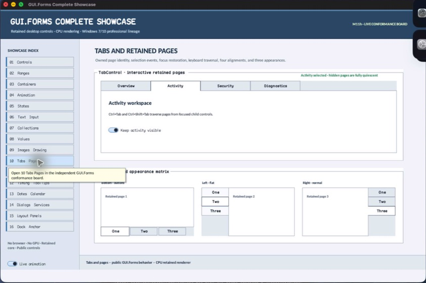

class · visual
TabControl
TabControl owns TabPage lifetime, selection, active-page attachment, per-page focus restoration, pointer and keyboard traversal, four header alignments, three appearances, inspectable geometry, and semantic virtual tabs.
Visual evidence

Ownership and hierarchy
- Hierarchy
- ContainerControl → TabControl
- Declaration
- include/gui_forms/controls/scrollable_control/container_control/tab_control/tab_control.hpp:34
- Definition
- src/controls/scrollable_control/container_control/tab_control/tab_control.cpp
Declared methods
TabControl public
explicit TabControl(StableId stable_id)Constructs a focusable top-aligned normal-appearance page owner with bounded default item size.
add_page public
void add_page(std::shared_ptr<TabPage> page)Validates nonnull unparented unique TabPage ownership, attaches it, and selects the first page deterministically.
remove_page public
[[nodiscard]] std::shared_ptr<TabPage> remove_page(const TabPage& page)Detaches and returns the exact page, preserves a nearby selection, and restores focus without leaving hidden descendants active.
pages public
[[nodiscard]] std::vector<std::shared_ptr<TabPage>> pages() constReturns a live strong snapshot in retained page order after expired references are excluded.
page_count public
[[nodiscard]] std::size_t page_count() constReturns the number of live owned pages.
page_at public
[[nodiscard]] std::shared_ptr<TabPage> page_at(std::size_t index) constReturns the live page at a validated retained index.
selected_index public
[[nodiscard]] std::optional<std::size_t> selected_index() constReturns the live selected page index or no value when the control is empty.
selected_tab public
[[nodiscard]] std::shared_ptr<TabPage> selected_tab() const noexceptReturns the selected live TabPage or null when none remains.
set_selected_index public
void set_selected_index(std::size_t index)Validates index and changes selection through the focus-memory, visibility, event, and invalidation law.
set_selected_tab public
void set_selected_tab(const std::shared_ptr<TabPage>& page)Requires an owned live page and changes selection through the same authoritative path.
alignment public
[[nodiscard]] TabAlignment alignment() const noexceptReturns top, bottom, left, or right header-strip placement.
set_alignment public
void set_alignment(TabAlignment alignment)Validates alignment vocabulary and invalidates geometry, rendering, hit testing, and semantics.
appearance public
[[nodiscard]] TabAppearance appearance() const noexceptReturns normal tabs, buttons, or flat-buttons rendering policy.
set_appearance public
void set_appearance(TabAppearance appearance)Validates appearance vocabulary and invalidates style, paint, and semantics.
item_size public
[[nodiscard]] Size item_size() const noexceptReturns the logical header width and height applied to each tab.
set_item_size public
void set_item_size(Size size)Accepts finite bounded positive dimensions and invalidates measure/arrangement/paint/hit testing.
style public
[[nodiscard]] const BasicControlStyle& style() const noexceptReturns the explicit BasicControlStyle used for header and frame painting.
set_style public
void set_style(BasicControlStyle style)Validates and commits compatibility colors before invalidating visual and semantic state.
tab_bounds public
[[nodiscard]] Rect tab_bounds(std::size_t index) constReturns the local header rectangle for a validated page index under current alignment.
display_bounds public
[[nodiscard]] Rect display_bounds() const noexceptReturns the local rectangle assigned to the selected page after the header strip is removed.
selected_index_changed public
[[nodiscard]] Event<const TabSelectionChange&>& selected_index_changed() noexceptReturns the event published after old-page focus is remembered and new-page selection commits.
measure public
[[nodiscard]] Size measure(Size available) overrideCombines the largest live page demand with orientation-aware header-strip extent.
arrange public
void arrange(Rect final_bounds) overrideReconciles page ownership, assigns only the selected page to display bounds, and keeps inactive pages quiescent.
on_paint public
void on_paint(Painter& painter, Rect local_damage) overrideRecords the tab frame, all headers, selected/focused cues, captions, and current appearance.
on_pointer public
void on_pointer(PointerEvent& event) overrideTracks primary-pointer engagement and selects the released header only when the gesture remains qualified.
on_key_preview public
void on_key_preview(KeyEvent& event) overrideHandles Control-Tab traversal and orientation-aware arrow selection before descendant dispatch.
on_focus_changed public
void on_focus_changed(bool focused) overrideCommits the header focus cue and restores selected-page focus when appropriate.
semantic_descriptor public
[[nodiscard]] SemanticDescriptor semantic_descriptor() const overrideProjects the owner as a tab list with selected-page value.
semantic_virtual_children public
[[nodiscard]] std::vector<SemanticNode> semantic_virtual_children() const overrideExposes each live page header as a stable selectable tab semantic node.
on_semantic_child_action public
bool on_semantic_child_action(std::string_view stable_id, SemanticAction action, std::string_view value) overrideMaps a virtual tab select/press action to the owned page selection path.
index_of private
[[nodiscard]] std::optional<std::size_t> index_of( const std::shared_ptr<TabPage>& page) constReports the current index of value without mutation.
select_relative private
void select_relative(int delta)Executes TabControl's select relative operation against retained state; the signature records its exact inputs, result, constness, and failure surface.
remember_page_focus private
void remember_page_focus(const std::shared_ptr<TabPage>& page)Executes TabControl's remember page focus operation against retained state; the signature records its exact inputs, result, constness, and failure surface.
restore_page_focus private
void restore_page_focus(const std::shared_ptr<TabPage>& page, bool selection_owned_focus)Executes TabControl's restore page focus operation against retained state; the signature records its exact inputs, result, constness, and failure surface.
reconcile_pages private
void reconcile_pages()Executes TabControl's reconcile pages operation against retained state; the signature records its exact inputs, result, constness, and failure surface.